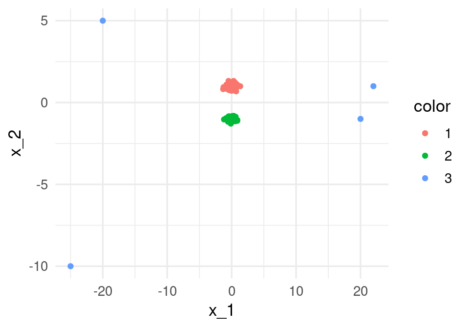
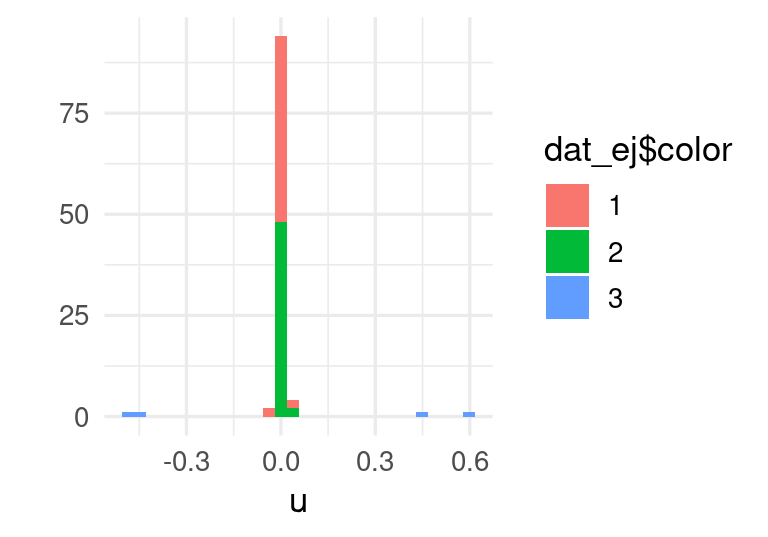
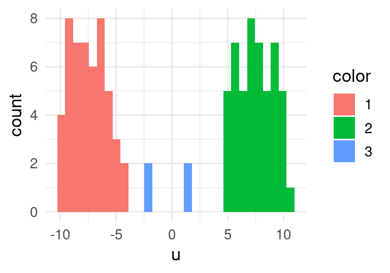
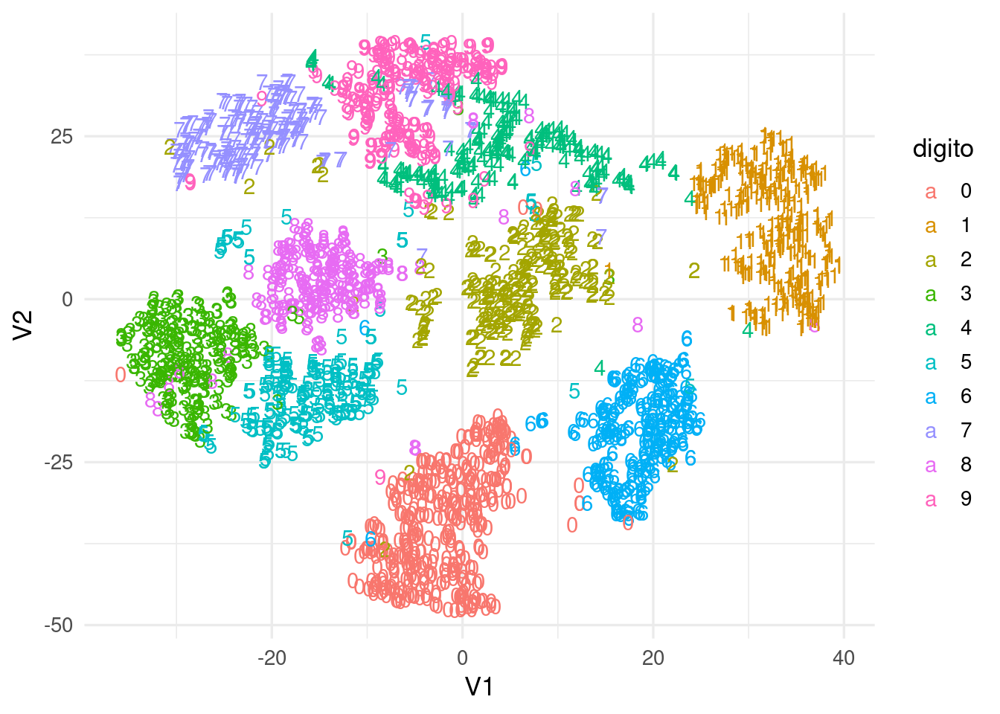
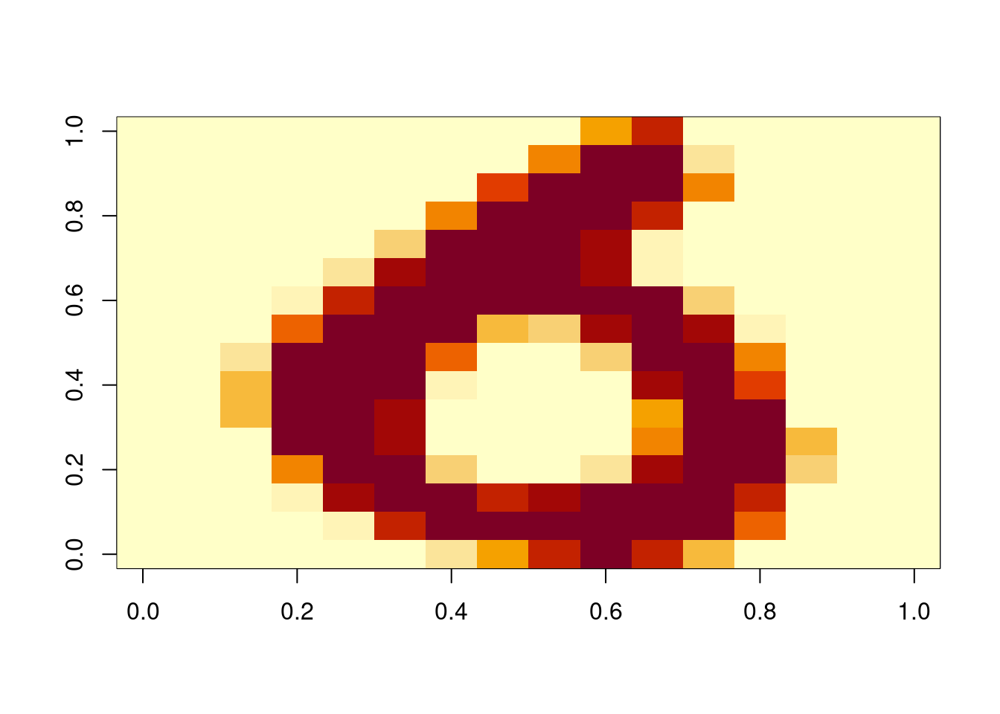
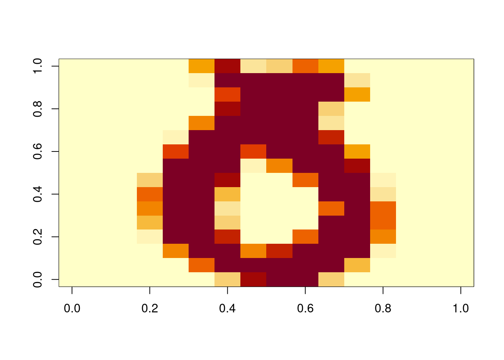
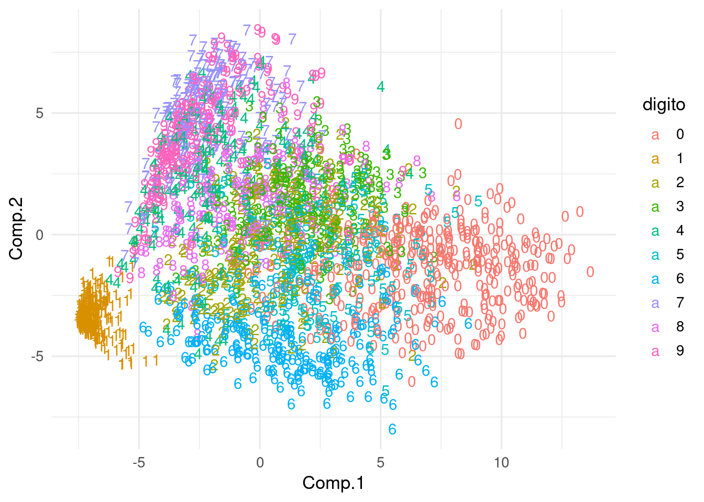
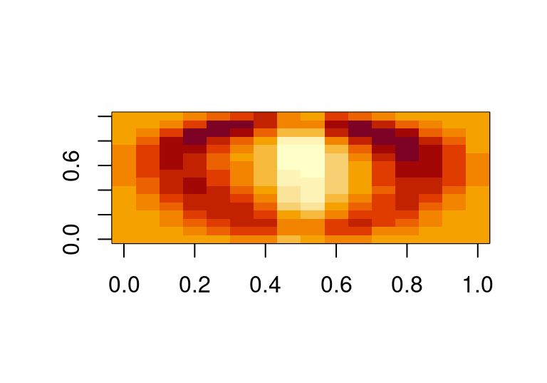
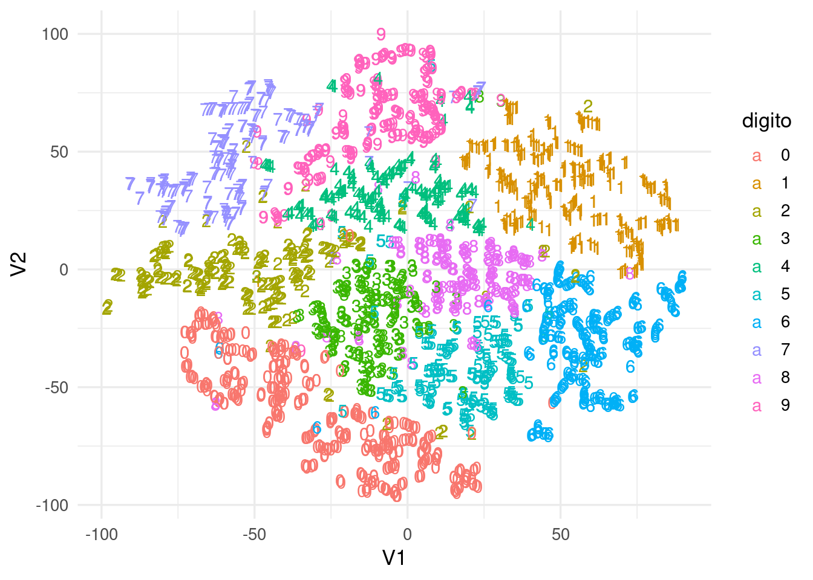
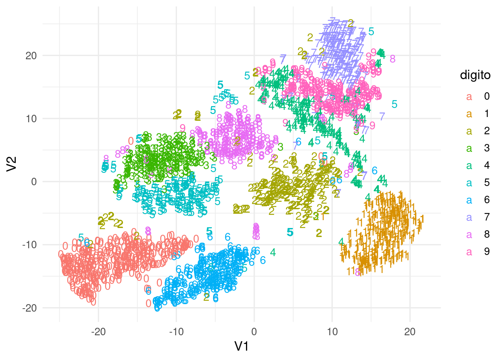

11 t-SNE y reducción de dimensionalidad
Existen otros métodos para reducir dimensionalidad, como MDS (multidimensional scaling, que se concentra en preservar distancias entre casos), o métodos de embeddings basados en redes neuronales (usar datos en capas ocultas con un número relativamente chico de unidades, cuando queremos que nuestra representación esté asociada a una variable respuesta). Aquí mostramos una de estas técnicas: t-SNE, t-Stochastic Neighbor Embedding.
Como motivación a esta técnica, observemos primero que los métodos como componentes principales buscan obtener una representación que mantenga lejos casos que son muy diferentes (pues buscamos aproximar los datos, o encontrar direcciones de máxima varianza). Sin embargo, en algunos casos los que más nos puede interesar es una representación que mantenga casos similares cercanos, aún cuando perdamos información acerca de distancia de casos muy distintos.
Ejemplo
Consideremos los siguientes datos:
set.seed(8823)
x_1 <- c(rnorm(100, 0, 0.5), -20, -25, 20, 22)
x_2 <- c(rnorm(50, 1, 0.2), rnorm(50, -1, 0.1), 5, -10, -1, 1)
color <- as.character(c(rep(1, 50), rep(2, 50), rep(3, 4)))
dat_ej <- data_frame(x_1, x_2, color)## Warning: `data_frame()` was deprecated in tibble 1.1.0.
## Please use `tibble()` instead.
## This warning is displayed once every 8 hours.
## Call `lifecycle::last_lifecycle_warnings()` to see where this warning was generated.ggplot(dat_ej, aes(x = x_1, y = x_2, colour = color)) + geom_point() Notamos que la primera dimensión de svd va en dirección del eje 1, donde hay más dispersión en los datos alrededor del origen.
svd(dat_ej |> select(-color)) |> pluck("v")## [,1] [,2]
## [1,] -0.99595816 0.08981844
## [2,] -0.08981844 -0.99595816Los datos proyectados, sin embargo, ocultan la estructura de grupos que hay en los puntos cercanos al origen, pues la proyección es
qplot(svd(dat_ej[,1:2])$u[,1], fill = dat_ej$color) + xlab('u')## `stat_bin()` using `bins = 30`. Pick better value with `binwidth`.
Aunque es posible considerar las siguientes aproximaciones de la svd, en un problema de dimensión alta esto puede querer decir que nos costará más trabajo encontrar la estructura de casos similares usando estas técnicas lineales.
En t-SNE construimos una medida de similitud entre puntos que busca concentrarse en puntos similares. Por ejemplo, la estructura de clusters de estos datos podemos recuperarla en una dimensión:
install.packages("Rtsne")
library(Rtsne)
sne_ejemplo <- Rtsne(as.matrix(dat_ej[,1:2]),
dims = 1, perplexity=32,
theta = 0, eta = 50)
sne_coords <- sne_ejemplo$Y
colnames(sne_coords) <- c("y_1")
sne_coords <- as_tibble(sne_coords)
sne_coords$color <- dat_ej$color
ggplot(sne_coords, aes(x = y_1, fill = color)) + geom_histogram() +
xlab('u')
11.0.1 SNE
t-SNE es una adaptación de SNE (Stochastic Neighbor Embedding). Veamos primero las ideas básicas de esta técnica: Para controlar las distancias que nos interesa preservar, primero introducimos una medida de similitud entre dos casos (renglones) \(x^{(i)}, x^{(j)}\): \[\begin{equation} p_{j|i} = \frac{1}{P_i}\exp\left(- ||x_j - x_i ||^2 / 2\sigma_i^2 \right) \tag{11.1} \end{equation}\] donde \(P_i\) es una constante de normalización tal que \(\sum_j {p_{j|i}} = 1\). Por el momento pensemos que la \(\sigma_i\) está fija en algún valor arbitrario.
- Notamos que \(p_{j|i}\) toma valores cercanos a 1 cuando \(x_i\) y \(x_j\) están cercanos (su distancia es chica), y rápidamente decae a 0 cuando \(x_i\) y \(x_j\) se empiezan a alejar.
- Cuando la \(\sigma\) es chica, si \(x_i\) y \(x_j\) están aunque sea un poco separados, \(p_{j|i}\approx 0\). Si \(\sigma\) es grande, entonces esta cantidad decae más lentamente cuando los puntos se alejan
- Podemos pensar que tenemos una campana gaussiana centrada en \(x_i\), y la \(p_{j|i}\) está dada por la densidad mostrada arriba evaluada en \(x_j\)
Ahora pensemos que buscamos convertir estos dos puntos a un nuevo espacio de dimensión menor. Denotamos por \(y_j\) y \(y_i\) a los puntos correpondientes en el nuevo espacio. Definimos análogamente : \[q_{j|i} = \frac{1}{Q_i}\exp\left(- ||y_j - y_i ||^2 \right)\] ¿Cómo encontramos los valores \(y_j\)? La idea es intentar aproximar las similitudes derivadas: \[ p_{j|i} \approx q_{j|i},\] Pensemos que \(i\) está fija (que corresponden a los puntos \(x^{(i)}\) y \(y^{(i)}\)). Lo que queremos hacer es aproximar la estructura local alrededor de \(x^{(i)}\) mediante los puntos \(y\). Y esto queremos hacerlo para cada caso \(i\) en los datos. Nótese que estas similitudes son sensibles cuando los puntos están relativamente cerca, pero se hacen rápidamente cero cuando las distancias son más grandes. Esto permite que, al intentar hacer la aproximación, realmente nos concentremos en la estructura local alrededor de cada punto \(x^{(i)}\)
- Nótese que usamos \(\sigma=1\) en la definición de las \(q_{j|i}\), pues esto depende de la escala de la nueva representación (que vamos a encontrar).
- Dependiendo de la \(\sigma_i\), podemos afinar el método para definir qué tan local es la estructura que queremos aproximar.
11.0.2 Minimización para SNE
En SNE, el objetivo a minimizar es la divergencia de Kullback-Liebler, que es una especie de distancia entre distribuciones de probabilidad. Buscamos resolver \[\min_{y^{1}, y^{2}, \ldots, y^{(n)}} \sum_{i,j} p_{j|i} \log \frac{p_{j|i}}{q_{j|i}}\] Existen muchas maneras de entender esta cantidad. Por lo pronto, notemos que
- Si \(p_{j|i} = q_{j|i}\), entonces esta cantidad es 0 (pues el logaritmo de 1 es cero).
- Para cada \(i\), \(\sum_{j} p_{j|i} \log \frac{p_{j|i}}{q_{j|i}}\geq 0\). Demuestra usando cálculo.
- Y más importante: \(p_{j|i} \log \frac{p_{j|i}}{q_{j|i}}\) es muy grande cuando obtenemos una \(q_{j|i}\) chica para una \(p_{j|i}\) grande (representar lejos puntos cercanos), pero no aumenta tanto si obtenemos una \(q_{j|i}\) grande para una \(p_{j|i}\) chica. Puedes usar cálculo para convencerte de esto también, por ejemplo, derivando con respecto a las \(x\) la cantidad \(\sum_i p_i \log p_i/x_i -\sum_i x_i\) (donde \(q_i = x_i/\sum_i x_i\), \(\sum_i x_i\) es la constante de normalización). Finalmente, la divergencia se minimiza usando descenso en gradiente. t-SNE se basa en las mismas ideas, con algunas mejoras (ver paper):
- Utiliza una versión simétrica de la distancia de Kullback-Liebler (que simplifica el cálculo del gradiente para obtener un algoritmo más rápido), y utiliza una distribución t en el espacio de baja dimensión en lugar de una gaussiana. Esto último mejora el desempeño del algoritmo en dimensiones altas.
Ejemplo
Uno de los ejemplos clásicos es con imágenes de dígitos
set.seed(288022)
zip_train <- read_csv("../datos/zip-train.csv")
muestra_dig <- zip_train |> sample_n(2500)
tsne_digitos <- Rtsne(muestra_dig[,2:257], max_iter=2000)tsne_digitos <- tsne_digitos$Y
colnames(tsne_digitos) <- c("V1", "V2")
dat_tsne <- as_tibble(tsne_digitos)
dat_tsne$digito <- as.character(muestra_dig$X1)
ggplot(dat_tsne, aes(x=V1, y=V2, label=digito, colour = digito)) + geom_text()
Observación: algunos dígitos parecen estar cerca de un cluster que no les corresponde, podemos checar:
dat_tsne <- mutate(dat_tsne, id = row_number())
seises_tbl <- filter(dat_tsne,
digito == 6 | digito == 0, V1 < 6, V1 > 0, V2 > -25)
seises_tbl |> arrange(desc(digito))## # A tibble: 46 × 4
## V1 V2 digito id
## <dbl> <dbl> <chr> <int>
## 1 5.50 -22.2 6 1247
## 2 5.47 -22.8 6 1834
## 3 4.32 -21.9 0 86
## 4 0.597 -21.0 0 260
## 5 2.36 -20.7 0 276
## 6 2.97 -23.3 0 314
## 7 2.69 -19.8 0 348
## 8 1.49 -20.7 0 416
## 9 3.26 -23.1 0 436
## 10 4.19 -18.9 0 445
## # … with 36 more rowsgraficar_digito <- function(indice, muestra_dig){
mat <- as.numeric(muestra_dig[indice,2:257]) |>
matrix(16,16, byrow = TRUE) |>
t()
image(mat[,16:1])
mat[,16:1]
}
mat <- graficar_digito(1247, muestra_dig)
mat <- graficar_digito(1202, muestra_dig)
Comparemos con componentes principales, que no logra separar muy bien los distintos dígitos:
comps <- princomp(muestra_dig[,-1])
dat_comps_tsne <- data.frame(comps$scores[,1:2])
dat_comps_tsne$digito <- as.character(muestra_dig$X1)
ggplot(dat_comps_tsne, aes(x=Comp.1, y=Comp.2, colour=digito, label=digito)) + geom_text() y vemos, por ejemplo, que la primera componente está separando principalmente ceros de unos. La primera dirección principal es:
image(matrix(comps$loadings[,1], 16,16)) ### Perplexity
El único parámetro que resta discutir es \(\sigma_i\) en (11.1). La primera idea es que distintas regiones (vecindades de \(x^{(i)}\)) pueden requerir distintas \(\sigma_i\). Este valor se escoge de forma que todos los puntos tengan aproximadamente un número fijo (aproximado) de vecinos, a través de un valor que se llama perplexity. De esta forma, \(\sigma_i\) en regiones donde hay densidad alta de datos es más chica, y \(sigma_i\) en regiones donde hay menos densidad es más grande (para mantener el número de vecinos aproximadamente similar). Antes de ver más detalles, veamos el ejemplo de los dígitos cambiando el valor de perplejidad:
tsne_digitos <- Rtsne(muestra_dig[,2:257], perplexity = 3,
max_iter=2000)
tsne_digitos <- tsne_digitos$Y
colnames(tsne_digitos) <- c("V1", "V2")
dat_tsne <- as_tibble(tsne_digitos)
dat_tsne$digito <- as.character(muestra_dig$X1)
ggplot(dat_tsne, aes(x=V1, y=V2, colour=digito, label=digito)) + geom_text()
tsne_digitos <- Rtsne(muestra_dig[,2:257], perplexity = 100,
max_iter=2000)
tsne_digitos <- tsne_digitos$Y
colnames(tsne_digitos) <- c("V1", "V2")
dat_tsne <- as_tibble(tsne_digitos)
dat_tsne$digito <- as.character(muestra_dig$X1)
ggplot(dat_tsne, aes(x=V1, y=V2, colour=digito, label=digito)) + geom_text() Notas (opcional): si \(P\) es el valor de perplejidad escogido, el valor de \(\sigma_i\) escoge de manera que las \(p_{j|i}\) obtenidas satisfagan \(2^{-\sum_{j} p_{j|i}\log_2 p_{j|i}}\approx P\). El valor de la izquierda en esta ecuación se puede interpretar como una medida suave del número de puntos donde se concentra la masa de probabilidad. Por ejemplo:
perp <- function(x){2^sum(-x*log2(x))}
p <- c(0.01, 0.01, 0.01, 0.02, 0.95)
sum(p)## [1] 1perp(p)## [1] 1.303593p <- c(0.01, 0.18, 0.01, 0.4, 0.4 )
perp(p)## [1] 3.107441p <- c(rep(1,20), rep(20,20))
p <- p / sum(p)
perp(p)## [1] 24.21994